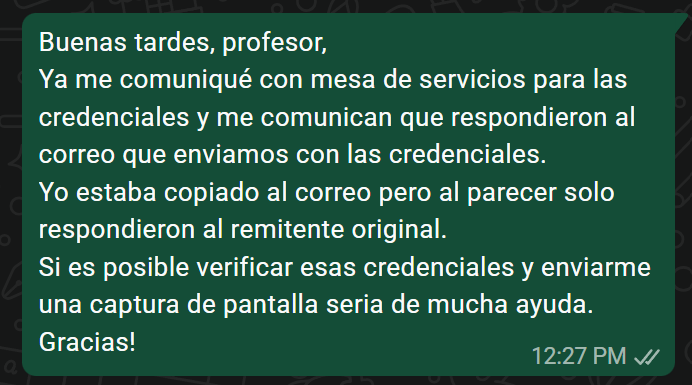
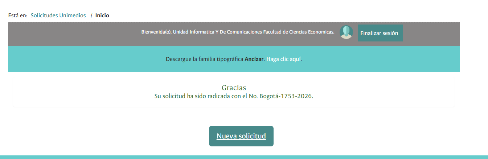
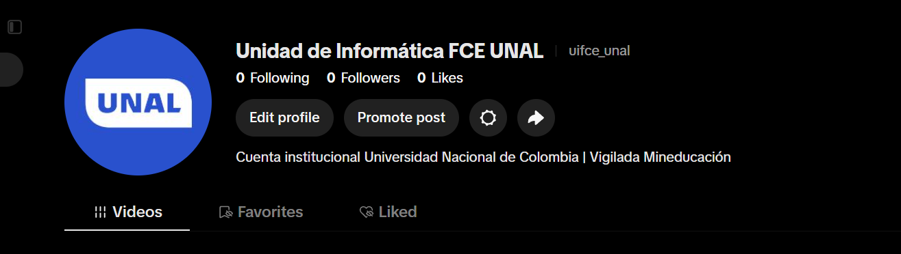
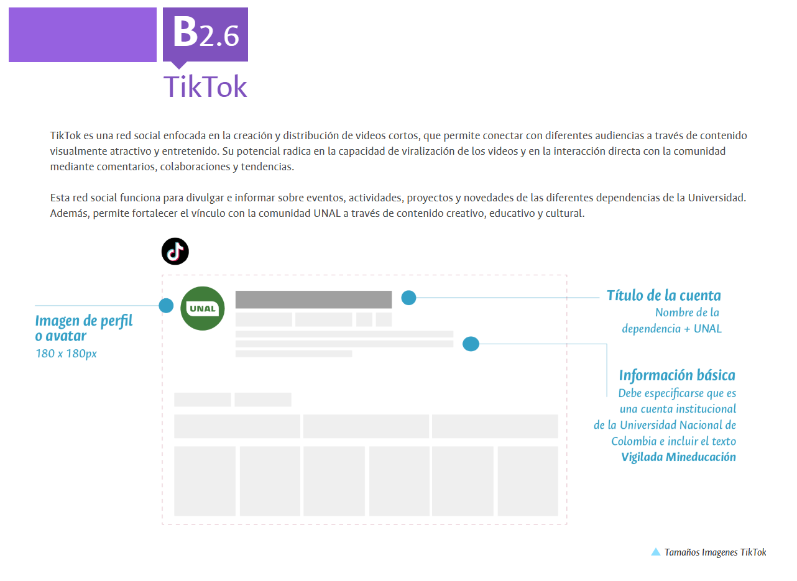
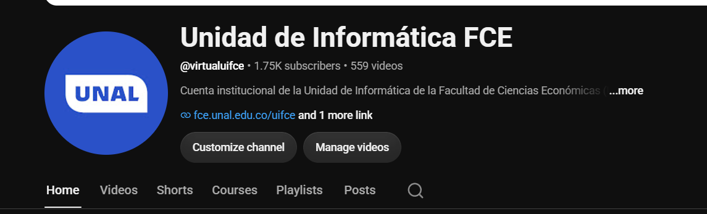
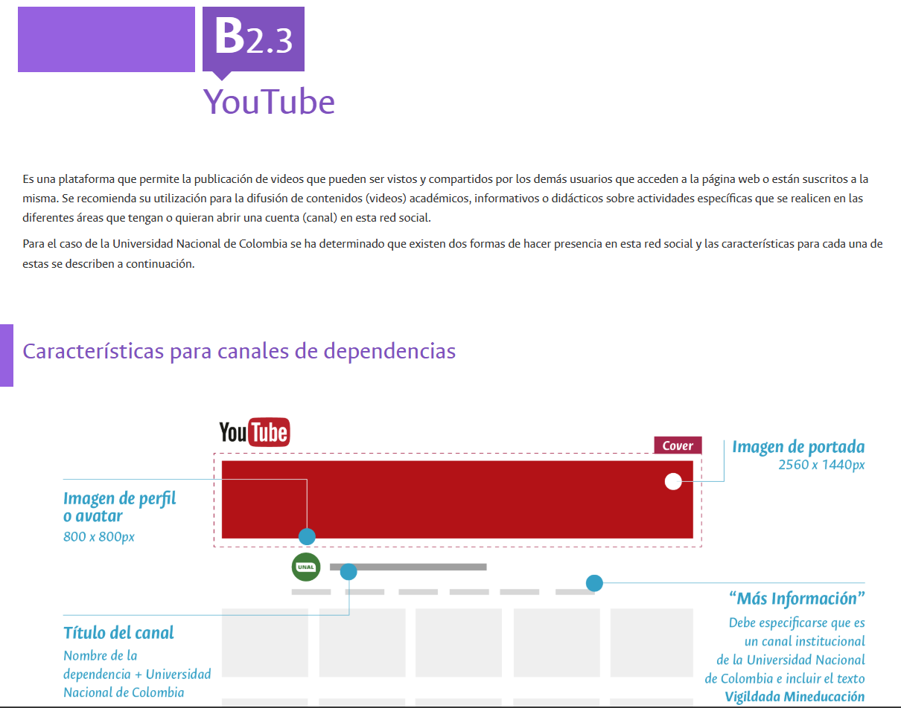

ESTRATEGIAS TECNOLÓGICAS · UIFCE
Reunión de coordinación
Avance de la planeación 2026-2
20 de noviembre de 2026
PROPÓSITO
Objetivos de la reunión
1 · MOSTRAR
Avance
Qué se ha logrado en la planeación 2026-2, entregable por entregable.
2 · ALINEAR
Prioridades
Dependencias y prioridades compartidas entre los frentes de trabajo.
3 · DECIDIR
Próximos pasos
Apoyos y acuerdos necesarios para lo que resta del semestre.
Reunión de coordinación · Estrategias Tecnológicas
2
PANORAMA
20 entregables en 4 frentes
6
Canales digitales
5
Producción y difusión visual
3
Eventos y comunidad
6
Gestión y nuevos proyectos
Reunión de coordinación · Estrategias Tecnológicas
3
FRENTE 1 · CANALES DIGITALES · 1 DE 6
Recuperación o recreación de la cuenta de Instagram
ESTADO
En proceso
PRÓXIMO PASO
Sin entregable de tercer corte definido en la hoja.
AVANCE
50 %
Ya se creó el correo electrónico. Mesa de ayuda confirmó que se enviaron las credenciales; se envió un correo para pedirlas.
Hoy, por llamada, mesa de ayuda indicó que ese último correo fue respondido con las credenciales, pero solo al remitente original.
Se pidió verificar las credenciales y enviar una captura de pantalla.

Correo enviado el 13 de noviembre.

Mensaje enviado hoy.
Reunión de coordinación · Estrategias Tecnológicas
4
FRENTE 1 · CANALES DIGITALES · 2 DE 6
Posicionamiento prioritario de LinkedIn UIFCE
ESTADO
En proceso
AVANCE
50 %
Inicia la difusión; falta colocar la foto de portada UIFCE.
PRÓXIMO PASO
Hacer seguimiento de métricas sobre cómo han avanzado las interacciones de LinkedIn en comparación con los últimos 6 meses.

Visualizaciones de la página: ordenador 208, móvil 320. Fuente: análisis directo de LinkedIn.
Reunión de coordinación · Estrategias Tecnológicas
5
FRENTE 1 · CANALES DIGITALES · 3 DE 6
Creación de la cuenta de TikTok UIFCE
ESTADO
En proceso
AVANCE
50 %
Cuenta creada y perfil configurado según Unimedios. Se envió a revisión: solicitud de verificación radicada (No. Bogotá-1753-2026).
PRÓXIMO PASO
Esperar la verificación por parte de Unimedios.

Solicitud radicada en Unimedios.

Perfil actual, enviado a revisión.

Directrices de Unimedios para TikTok.
Reunión de coordinación · Estrategias Tecnológicas
6
FRENTE 1 · CANALES DIGITALES · 4 DE 6
Consolidación y cierre de oficialización de YouTube UIFCE
ESTADO
En proceso
AVANCE
45 %
Cumplimiento verificable de la guía B2.3.
PRÓXIMO PASO
Sin entregable de tercer corte definido en la hoja.
REVISIÓN DEL CANAL · 20 DE NOVIEMBRE
Cumplimiento verificable frente a la guía de identidad B2.3: 45 % (4,5 de 10 puntos).
Prioridades: retomar la publicación de videos, rehacer la portada (2560 × 1440 px) y completar la descripción.

Canal actual (@virtualuifce).

Guía B2.3 de identidad UNAL.
Reunión de coordinación · Estrategias Tecnológicas
7
FRENTE 1 · CANALES DIGITALES · 5 DE 6
Blog UIFCE
ESTADO
Sin estado registrado
AVANCE
0 %
Prioridad: despliegue. Revisar documentación.
PRÓXIMO PASO
Revisión del blog y despliegue de los cambios.
Reunión de coordinación · Estrategias Tecnológicas
8
FRENTE 1 · CANALES DIGITALES · 6 DE 6
Micrositio UIFCE
ESTADO
Sin estado registrado
AVANCE
100 %
Prioridad.
Comentario: reunión Yony.
PRÓXIMO PASO
Sin entregable de tercer corte definido en la hoja.
Reunión de coordinación · Estrategias Tecnológicas
9
FRENTE 2 · PRODUCCIÓN Y DIFUSIÓN VISUAL · 1 DE 5
Piezas gráficas y material audiovisual
ESTADO
En proceso
AVANCE
80 %
OK.
PRÓXIMO PASO
Al menos 3 videos con edición en cualquier formato.
Al menos 4 ideas de videos con guion y personas que participan.
Ajuste previsto: cambiar enfoque.
Reunión de coordinación · Estrategias Tecnológicas
10
FRENTE 2 · PRODUCCIÓN Y DIFUSIÓN VISUAL · 2 DE 5
Repositorio de Hacks Informáticos
ESTADO
Sin estado registrado
AVANCE
0 %
Prioridad para el segundo pago.
PRÓXIMO PASO
Asignar contenidos a monitores, con al menos 2 ya hechos.
Ajuste previsto: reestructurar los Hacks para incluir otros contenidos.
Reunión de coordinación · Estrategias Tecnológicas
11
FRENTE 2 · PRODUCCIÓN Y DIFUSIÓN VISUAL · 3 DE 5
Carteleras UIFCE (física y digital)
ESTADO
Completado
AVANCE
100 %
OK.
PRÓXIMO PASO
Sin entregable de tercer corte definido en la hoja.
Comentario en la hoja: explorar formas de conseguir recursos (convocatorias de extensión de VIE o Decanatura directa).
Reunión de coordinación · Estrategias Tecnológicas
12
FRENTE 2 · PRODUCCIÓN Y DIFUSIÓN VISUAL · 4 DE 5
Vigilancia y piezas de software disponible en cada sala
ESTADO
En proceso
AVANCE
0 %
Incluir los espacios de sala abierta al público en la pieza gráfica, difundir la información e incluir espacios de soporte técnico en la pieza.
Comentario: módulo listo, a la espera de producción de video para divulgarlo.
PRÓXIMO PASO
Ejecución de «Sala Abierta al Público».
Reunión de coordinación · Estrategias Tecnológicas
13
FRENTE 2 · PRODUCCIÓN Y DIFUSIÓN VISUAL · 5 DE 5
Línea gráfica de Cursos Libres
ESTADO
En proceso
AVANCE
50 %
OK.
PRÓXIMO PASO
Actualizar la línea gráfica física con los cursos nuevos.
Ajuste previsto: meter SAP. Comentario en la hoja: agregar el curso nuevo «Introducción a SAP».
Reunión de coordinación · Estrategias Tecnológicas
14
FRENTE 3 · EVENTOS Y COMUNIDAD · 1 DE 3
Microtalleres UIFCE
ESTADO
En proceso
AVANCE
0 %
Prioridad: cronograma consolidado de eventos generales ET 2026-2.
Comentario: Angelica 2, Jean Carlos y Juan Rincon; validado por corresponsabilidad.
PRÓXIMO PASO
Al menos 1 microtaller dictado y otro programado y difundido.
Comentario en la hoja: implementar certificado de asistencia.
Reunión de coordinación · Estrategias Tecnológicas
15
FRENTE 3 · EVENTOS Y COMUNIDAD · 2 DE 3
Semana UIFCE — primera edición
ESTADO
Sin estado registrado
AVANCE
75 %
Preparar la difusión de lo hecho en la semana como un recap.
PRÓXIMO PASO
Ejecutar la final de la hackatón o, al menos, definir la fecha final.
Reunión de coordinación · Estrategias Tecnológicas
16
FRENTE 3 · EVENTOS Y COMUNIDAD · 3 DE 3
Red de Aliados Académicos UIFCE
ESTADO
Completado
AVANCE
75 %
Definir el proyecto concretamente, documentarlo y colaborar con AA para hacer networking.
PRÓXIMO PASO
Sin entregable de tercer corte definido en la hoja.
Reunión de coordinación · Estrategias Tecnológicas
17
FRENTE 4 · GESTIÓN Y NUEVOS PROYECTOS · 1 DE 6
Líneas de trabajo de Estrategias Tecnológicas
ESTADO
Completado
AVANCE
0 %
Ninguno.
PRÓXIMO PASO
Sin entregable de tercer corte definido en la hoja.
Reunión de coordinación · Estrategias Tecnológicas
18
FRENTE 4 · GESTIÓN Y NUEVOS PROYECTOS · 2 DE 6
Cierre de Términos y Condiciones de Estrategias Tecnológicas
ESTADO
Completado
AVANCE
75 %
Prioridad: cambiar contexto, expectativas y entregables, y mostrar avance para el segundo pago.
PRÓXIMO PASO
Inicio de la documentación de los nuevos TyC.
Reunión de coordinación · Estrategias Tecnológicas
19
FRENTE 4 · GESTIÓN Y NUEVOS PROYECTOS · 3 DE 6
Boletín Digital UIFCE
ESTADO
Completado
AVANCE
0 %
Publicar.
PRÓXIMO PASO
Plantilla ya creada de los boletines.
Ideas para los mismos.
Reunión de coordinación · Estrategias Tecnológicas
20
FRENTE 4 · GESTIÓN Y NUEVOS PROYECTOS · 4 DE 6
Repositorio de material con IA y automatización de producción de video
ESTADO
Completado
AVANCE
100 %
Notebook. Documentar formalmente el proyecto y establecer un formato estándar (prompt) para que todos los videos sean de calidad.
Proponer entregables concretos y alternativas (matriz DOFA).
PRÓXIMO PASO
Sin entregable de tercer corte definido en la hoja.
Reunión de coordinación · Estrategias Tecnológicas
21
FRENTE 4 · GESTIÓN Y NUEVOS PROYECTOS · 5 DE 6
Repositorio documental permanente de Estrategias Tecnológicas
ESTADO
Completado
AVANCE
25 %
Colaborar con GC, establecer lineamientos de calidad, efectivos y de mejora para ambos repositorios.
Comentario: acompañamiento a GC para infografía con guía interactiva.
PRÓXIMO PASO
Sin entregable de tercer corte definido en la hoja.
Reunión de coordinación · Estrategias Tecnológicas
22
FRENTE 4 · GESTIÓN Y NUEVOS PROYECTOS · 6 DE 6
Acompañamiento Interárea
ESTADO
En proceso
AVANCE
100 %
ET en Marcha. Formalizar la estrategia e implementarla en la cultura de coordinación.
Comunicar la nueva estrategia y la dinámica al equipo, y también el por qué, el para qué y el para quién.
PRÓXIMO PASO
Sin entregable de tercer corte definido en la hoja.
Reunión de coordinación · Estrategias Tecnológicas
23
DISCUSIÓN · 10 MIN
Decisiones y apoyos requeridos
Decisiones
¿Qué entregable necesita una definición hoy?
Bloqueos
¿Qué depende de otra persona o de otra área?
Apoyos
¿Qué recursos o coordinación faltan para cerrar el semestre?
Reunión de coordinación · Estrategias Tecnológicas
24
CIERRE · 5 MIN
Compromisos y próximos pasos
| Acción | Responsable | Fecha |
|---|---|---|
| [acción acordada] | [responsable] | [fecha] |
| [acción acordada] | [responsable] | [fecha] |
| [acción acordada] | [responsable] | [fecha] |
| [acción acordada] | [responsable] | [fecha] |
Reunión de coordinación · Estrategias Tecnológicas
25